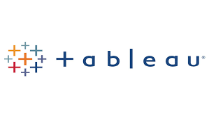

The SQL code provided is a series of operations aimed at cleaning and enhancing the "NashvilleHousing" dataset in the "PortfolioProject" database.
It begins by standardizing date formats and filling missing 'PropertyAddress' values.
It then splits address and city information from the 'PropertyAddress' column and separates address, city, and state details from the 'OwnerAddress' column.
Additionally, it updates 'SoldAsVacant' values ('Y' and 'N') to 'Yes' and 'No' respectively for consistency.
The code further identifies and removes duplicate rows based on specific criteria using ROW_NUMBER() within a Common Table Expression (CTE).
This sequence of SQL commands aims to improve data consistency, structure, and cleanliness within the 'NashvilleHousing' dataset.

The SQL code analyzes COVID-19 data, calculating cases, deaths, infection rates, and vaccination percentages from 'CovidDeaths' and 'CovidVaccinations' tables in the 'PortfolioProject' database.
It offers country, continent-level infection and death rates, and vaccination insights. Using joins, CTEs, temporary tables, and views, it merges and computes data, preparing it for potential
visualizations, providing insights into COVID-19 impact and vaccination trends across locations and timeframes.
The SQL queries examine Marvel character attributes, including popularity, traits, alignments, and filters for hometowns, genders, intelligence, weight, and height.
They cover popularity rankings, categorize characters by energy levels, and retrieve specific character subsets like good characters from the USA with high intelligence, neutral females, and specific height and weight categories.

This python project for correlation analysis using the movies industry dataset from kaggle, there are 6820 movies in the dataset (220 movies per year, 1986-2016),
view the correlation between differents attributes.
An AB test is a research method used to compare two versions of something, like a website, app, or advertising campaign, to determine which performs better.
It involves dividing users into two groups, A and B, showing each group a different version, and collecting data to assess their performance.
This controlled experiment helps make informed decisions about which variant is more effective based on the collected data and comparison between the groups.

This collection comprises several RStudio projects primarily focused on applied financial econometrics.
"Project 1" entails time series modeling of the Gold Price Index, while "Project 2" focuses on volatility
modeling and downside risk modeling of the Euro stock close exchange price. "Project 3" involves Multivariate
VAR and GARCH modeling for a macro variable dataset, specifically analyzing the monthly inflation rate.
Additionally, it encompasses a machine learning approach, particularly Random Forest technique,
aimed at predictive modeling for rain events in Madrid, Spain.

This holds all my tableau projects.